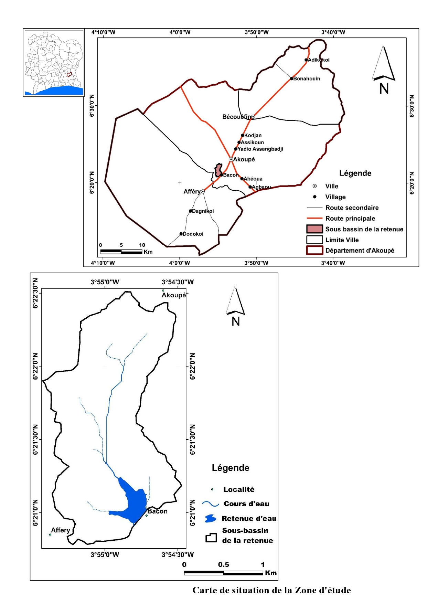
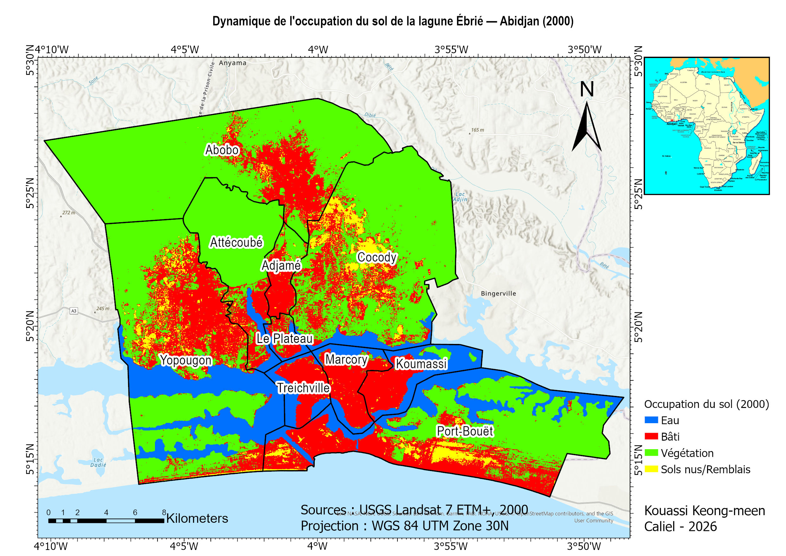

Hydrogéologue · Géomaticien · Abidjan, Côte d'IvoireHydrogeologist · Geomatics Specialist · Abidjan, Côte d'Ivoire
Master 2 Hydrogéologie — UFR STRM, Université Félix Houphouët-BoignyMSc Hydrogeology — UFR STRM, Université Félix Houphouët-Boigny
Hydrogéologue de formation, je mobilise les outils de la géomatique et de la télédétection au service de la gestion durable des ressources en eau et des milieux naturels en Afrique de l'Ouest. Mon expertise couvre l'analyse spatiale des bassins versants, la cartographie de la vulnérabilité à l'érosion et le suivi de la dynamique d'occupation du sol.
Hydrogeologist by training, I apply geomatics and remote sensing tools to sustainable water resource management and environmental monitoring in West Africa. My expertise spans watershed spatial analysis, erosion vulnerability mapping, and land use change monitoring.
Travaux réalisésResearch & Projects

2022 — Mémoire de Master 22022 — Master's Thesis
Analyse diachronique de l'occupation du sol (2002–2020), cartographie multicritère AHP Saaty de la vulnérabilité à l'érosion hydrique et délimitation SIG des périmètres de protection — Sud-Est Côte d'Ivoire.
Diachronic land use analysis (2002–2020), AHP Saaty multicriteria erosion vulnerability mapping, and GIS-based delineation of protection perimeters — South-East Côte d'Ivoire.

2026 — Projet Portfolio2026 — Portfolio Project
Analyse diachronique multi-dates sur 10 communes riveraines. Quantification de la réduction lagunaire (−13 km²) et de l'expansion urbaine (+190 km²) sur 24 ans via classification Landsat validée par matrices de confusion.
Multi-date diachronic analysis across 10 communes. Quantification of lagoonal reduction (−13 km²) and urban expansion (+190 km²) over 24 years using Landsat classification validated by confusion matrices.
Parcours académiqueAcademic background
2020 — 2022
UFR Sciences de la Terre et des Ressources Minières (STRM) — Université Félix Houphouët-Boigny, Abidjan, Côte d'Ivoire
Mention Bien — 16,25/20 — Soutenance octobre 2022With Distinction — 16.25/20 — Defended October 2022Formation antérieurePrevious education
Université Félix Houphouët-Boigny, Abidjan, Côte d'Ivoire
UN CC:Learn — United Nations
2020
Changement climatique : De l'apprentissage à l'action
Expertise techniqueTechnical expertise
Logiciels & Outils SIGGIS Software & Tools
Télédétection & AnalyseRemote Sensing & Analysis
Domaines d'expertiseDomains of expertise
Prenons contactGet in touch
Ouvert aux opportunités de recherche, aux collaborations académiques, aux postes dans les organisations internationales et aux projets dans les domaines de l'hydrogéologie, de la géomatique et de la gestion environnementale en Afrique de l'Ouest.
Open to research opportunities, academic collaborations, positions in international organizations, and projects in hydrogeology, geomatics, and environmental management in West Africa.
TéléphonePhone
LocalisationLocation
Abidjan, Côte d'Ivoire